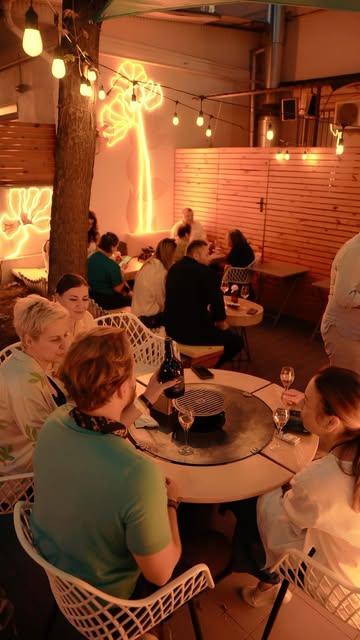
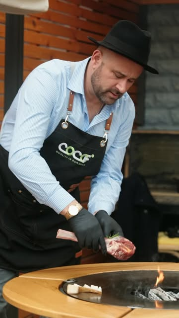
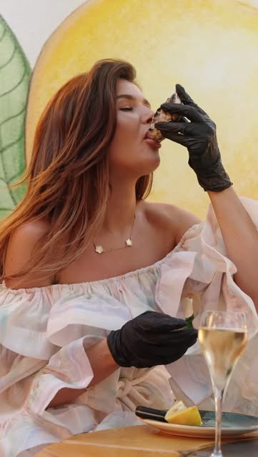

DIMINEAȚA
Mic dejun fără gluten
Ovăz cu banane pe lapte de cocos, boluri cu fructe și cafea.
Mic dejun fără gluten, deserturi raw, vinuri artizanale și seri de grill pe terasa noastră din centrul Chișinăului.

Bio Cocof are o bucătărie prietenoasă cu preferințe diferite. Acestea sunt câteva dintre preparatele și băuturile prezentate de restaurant.
Ovăz cu banane pe lapte de cocos, boluri cu fructe și cafea.

Carne, pește sau fructe de mare pregătite pe terasa privată.

Vinuri alese pentru o cină lungă sau o degustare cu prietenii.

Dimineața vii pentru ceva proaspăt. Seara rămâi pentru vin, grill și atmosfera din curtea interioară. Meniul include opțiuni fără gluten și deserturi vegan & raw.
În curtea privată, mesele cu grill, vinurile și luminile de seară creează o atmosferă aparte. Sună înainte ca să pregătim locul pentru tine.
Rezervă pe terasă ↗Locul, oamenii și mâncarea. Pentru noutăți și evenimente, urmărește profilul oficial.
Pentru o masă, o degustare sau o seară pe terasă, sună și rezervă înainte de vizită.